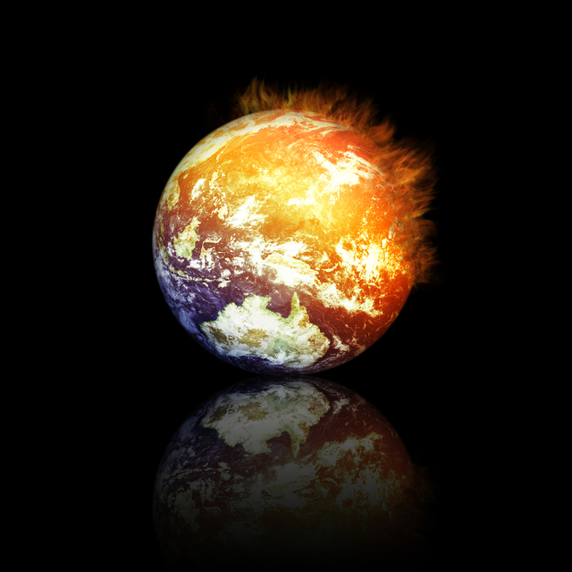

Since Global Warming has been a debated topic, people around the world are seeing the drawbacks of it.
The impacts that global warming brings to society are hurtful mainly because population has increased so much.
Pollution from cars emanating carbon dioxide increases respiratory diseases as well as temparatures. If we continue
to ignore global warming, disastrous events could occur such violent weather, extreme drought, and flooding. The most vulnerable group from global warming is farmers. Farmers cultivate different kind of vegetables as well as fruits
on certain time of the year. If temperature increases every year, farmers would not able to grow these foods because too much
heat burn their plantations.If people do not control gases that go into the earth's atmosphere, there would be food shortage.
In addition, farmers wouldn't be able to sustain their income, and their profession would be worthless. Global Warming presents other problem to this society. Problems such as high temperature on urban areas that would make urban
settlement impossible on a near future. The other problems on global warming are: As mentioned before, global warming causes many problems around the world. Continents such as Africa experience high temperatures
as well as severe drought. The following content provides information about the severity of global warming on today's society:Vulnerable Society
Shortage of Foods
Other Drawbacks Caused by Global Warming
Gravity of Global Warming
This is a fictional site created for a class at El Centro College. Check out the rest of my site!